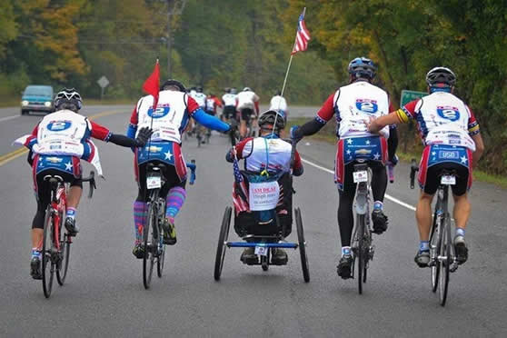
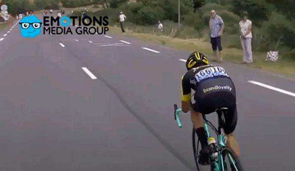

¿Qué tanto conoces de la historia del ciclismo? Se dice que una de las primeras apariciones de la bicicleta se dio en 1817 en Alemania y era más conocida como “Caballo de diversión” o también “máquina de correr”. Sin embargo, la historia del ciclismo tiene lugar desde 1870 en Italia, donde se llevó a cabo una de las primeras competiciones oficiales. Aunque en otras versiones se afirme que la bicicleta fue hecha desde los tiempos del Antiguo Egipto y China, solo se concretó que la primera carrera fue realizada desde Florencia hasta Pistoia con un recorrido de 33 kilómetros y donde el ganador fue el estadounidense Rynner van Neste. Desde ese momento se abrió paso a más competiciones en todo el mundo, unas se dedicaron al ciclismo como tal y otras a practicar el deporte tradicional. Pero Pero en el siglo XX ya fueron más que oficiales las carreras y se dividieron por etapas para poder tener más tramos y rutas por recorrer. Te puede interesar: historia del baloncesto

Estas son las competencias más importantes del ciclismo: Dado que en el siglo XX se impulsó el ciclismo como deporte y profesión, llegaron las competencias más arduas de todo el mundo. Cada año los ciclistas se preparaban para hacer parte de ellas y no era para más, pues estas competencias no solo prometían emoción sino también reconocimiento para los países participantes. ¿Sabes de qué carreras hablamos? Así se fueron dando los primeros tours: Tour de Francia - Inaugurado el 1 de julio de 1903 Giro de Italia - Creado en mayo de 1909 Vuelta ciclista a España - Primera edición celebrada en 1935 Vuelta ciclista a Colombia - Establecida desde 1951En las antiguas civilizaciones de Egipto, China e India aparecen los testimonios más antiguos sobre los antecedentes de este vehículo: la bicicleta. Pero se puede señalar como su antecesor directo, al celerífero, que era un aparato de dos ruedas de madera unidas por una barra o palo de un metro de largo, y que se desplazaba por impulso de los pies en el suelo, y que fuera inventado por el francés De Sivrac, y presentado en la Corte de Versalles en 1790.
La bicicleta, que dio origen a este deporte en las épocas modernas, apareció en Alemania en 1817; y hoy hay en el mundo más de 800 millones en el mundo, el doble que la cantidad de automóviles. La primera bicicleta de 1817 fue llamada " máquina de correr" y "Caballo de diversión". Desde sus orígenes, se consideró no sólo medio de locomoción sino también elemento de competición e ideal para ejercitarse físicamente. La primera bicicleta de pedales se llamó velocípedo y fue inventada por un herrero escocés, Kirkpatrick Macmillan, en 1839. En 1886 se fabricó el primer tándem, Bicicleta para dos y fue bien recibida. En 1989, los estadounidenses C. Kelly y G. Fisher construyeron la primera mountain Bike, con pedales conectados a la rueda trasera bicicleta todo terreno. La primera carrera en carretera fue en 1870, en Italia, desde Florencia a Pistoia, con un recorrido de 33 km, donde ganó el estadounidense Rynner van Neste. El primer Campeonato del Mundo en pista cubierta tuvo lugar en Aylestone Roads (Leicester, Gran Bretaña) en 1883. Allí ganó el francés Frédéric de Civry. En la última década del siglo XIX nacieron las primeras publicaciones deportivas consagradas al ciclismo en especial y, también, la mayoría de las que se dedicaron al deporte en general.

Ya en los albores del Siglo XX nacieron las grandes carreras en ruta por etapas: el Tour de Francia (el 1 de julio de 1903, ideado por Henri Desgranges), el Giro de Italia (creado por Costamagna, Cougnet y Morgagni en mayo de 1909) y, más adelante, la Vuelta Ciclista a España (cuya primera edición se celebró en 1935, ideada por Juan Pujol). La principal prueba en ruta por etapas sudamericana, la Vuelta Ciclista a Colombia, no se celebró hasta 1951. Cronología En el último cuarto del S. XIX, el velocípedo se había popularizado tanto en Europa y los E.E.U.U. que hasta había escuelas para aprender a andar en esos vehículos, algunos de los cuales eran verdaderamente estrafalarios. En 1867 las ruedas de la bicicleta eran metálicas. En 1875 se introdujo el avance de las ruedas de goma maciza. El 7 de enero de 1887, el norteamericano Thomas Stevens realiza el primer viaje en bicicleta alrededor del mundo. Partió de San Francisco y regresó a la misma ciudad luego de pedalear durante más de tres años. En 1889 John Boyd Dunlop inventó la cámara consistente en un aro tubular de caucho relleno de aire, que aísla la rueda del suelo. El 19 de julio de 1903, el francés Maurice Garin (un deshollinador de 32 años) ganó el Primer Tour de Francia.
La competencia ciclística duró 19 días y estuvo compuesta de seis etapas, con un recorrido total de 2.428 kilómetros. En 1919 el ciclista Lambot se impone en el Tour de Francia. En 1936, el ciclista francés Mauricio Richard, corriendo en la pista de Arcachón, a lo largo de 50 kilómetros, batió 12 récords mundiales y estableció otros dos. En 1954, el francés Bobbet ganó el Tour de Francia y en este mismo año, Bahamontes el premio de la montaña. Jacques Anquetil gana en 1964, por quinta vez, el Tour de Francia. En 1953, Fausto Coppi de Italia logra obtener el Campeonato del Mundo en Ciclismo. En 1960 muere de Malaria, que contrajo en una carrera en el Alto Volta. Eddy Merckx gana en 1974 su quinto Tour. En 1995, Miguel Induraín es el primer ciclista que gana el Tour cinco veces consecutivas. El ciclista más veloz es considerado John Howard, de Estados Unidos, quien alcanzó en 1985, los 245,08 kilómetros por hora en una bicicleta diseñada especialmente. En 1988 se fabricó en Nueva Zelanda una bicicleta de 22,24 metros y cuatro ciclistas recorrieron 246 metros con ella. En China hay 300 millones de bicicletas.

Aunque la bicicleta moderna apta para carreras se inventó en 1888, el ciclismo como deporte nació en Francia veinte años antes. Empezó como un recorrido de 1200 metros alrededor del parque Saint Claud en París en el que participaron siete ciclistas. Esta pequeña competencia la ganó un británico llamado James Moore. No olvides que para ese entonces, las bicicletas aún no tenían llantas ni cadena. Al año siguiente, en 1867, se llevó a cabo otra competencia. Más de 100 ciclistas recorrieron 123 km a campo traviesa entre las ciudades de París y Rouen. La victoria de ese año nuevamente se la llevó James Moore. ¡Bien por James! De esa forma surgió la primera modalidad de ciclismo, conocida como “ciclismo de ruta”. De igual manera, nace el primer deporte que evalúa la velocidad en un medio de transporte. Así es, antes que existieran las carreras de autos la gente ya desafiaba la velocidad, ¡pero en bicicletas!